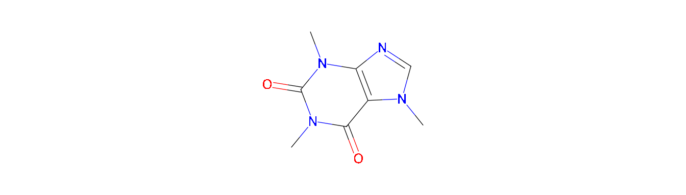
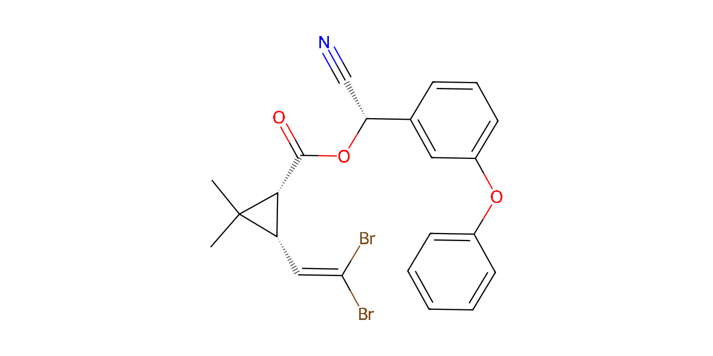

When working with data on chemical substances, we often need a reliable link between the data and the chemical identity of the substances. The R package chents provides a way to define and check the identity of chemically defined substances (“chemical entities”) and to collect related information.
When first defining a chemical entity, some chemical information is retrieved from the PubChem website using the webchem package.
library(chents)
caffeine <- chent$new("caffeine")
#> Querying PubChem for name caffeine ...
#> Get chemical information from RDKit using PubChem SMILES
#> CN1C=NC2=C1C(=O)N(C(=O)N2C)CIf Python and RDKit (> 2015.03) are installed and configured for use with the reticulate package, some additional chemical information including a 2D graph are computed.
The print method gives an overview of the information that was collected.
print(caffeine)
#> <chent>
#> Identifier $identifier caffeine
#> InChI Key $inchikey RYYVLZVUVIJVGH-UHFFFAOYSA-N
#> SMILES string $smiles:
#> PubChem
#> "CN1C=NC2=C1C(=O)N(C(=O)N2C)C"
#> Molecular weight $mw: 194.2
#> PubChem synonyms (up to 10):
#> [1] "caffeine" "58-08-2"
#> [3] "Guaranine" "1,3,7-Trimethylxanthine"
#> [5] "Methyltheobromine" "Theine"
#> [7] "Thein" "Cafeina"
#> [9] "Caffein" "Cafipel"There is a very simple plotting method for the chemical structure.
plot(caffeine)
If you have a so-called ISO common name of a pesticide active ingredient, you can use the ‘pai’ class derived from the ‘chent’ class, which starts with querying the BCPC compendium first.
delta <- pai$new("deltamethrin")
#> Querying BCPC for deltamethrin ...
#> Querying PubChem for inchikey OWZREIFADZCYQD-NSHGMRRFSA-N ...
#> Get chemical information from RDKit using PubChem SMILES
#> CC1([C@H]([C@H]1C(=O)O[C@H](C#N)C2=CC(=CC=C2)OC3=CC=CC=C3)C=C(Br)Br)C
plot(delta)
Additional information can be read from a local .yaml file. This information can be leveraged e.g. by the PEC_soil function of the ‘pfm’ package. However, this functionality is to be superseded by a dedicated package, defining data for the environmental risk assessment on chemicals, in particular on active ingredients of plant protection products.
Installation
You can conveniently install chents from the repository kindly made available by the R-Universe project:
install.packages("chents",
repos = c("https://jranke.r-universe.dev", "https://cran.r-project.org"))In order to profit from the chemoinformatics, you need to install RDKit and its python bindings. On a Debian type Linux distribution, just use
If you use this package on Windows or MacOS, I would be happy to include installation instructions here if you share them with me, e.g. via a Pull Request.
Configuration of the Python version to use
On Debian type Linux distributions, you can use the following line in your global or project specific .Rprofile file to tell the reticulate package to use the system Python version that will find the RDKit installed in the system location.
Sys.setenv(RETICULATE_PYTHON="/usr/bin/python3")